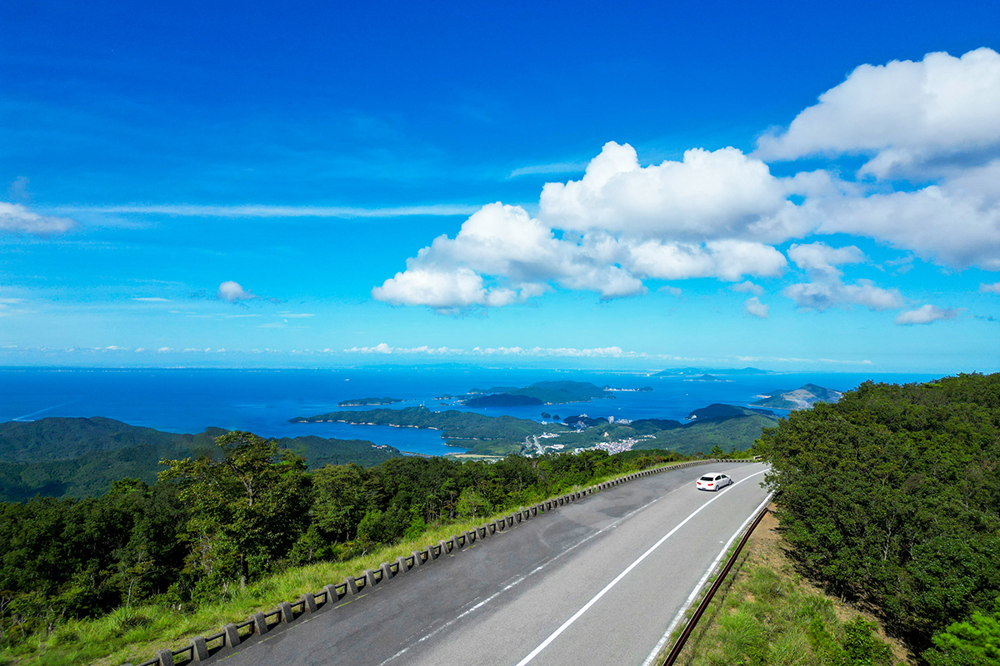
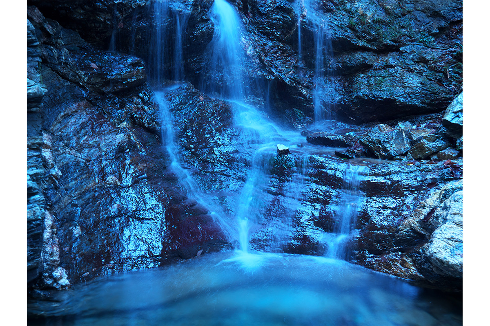
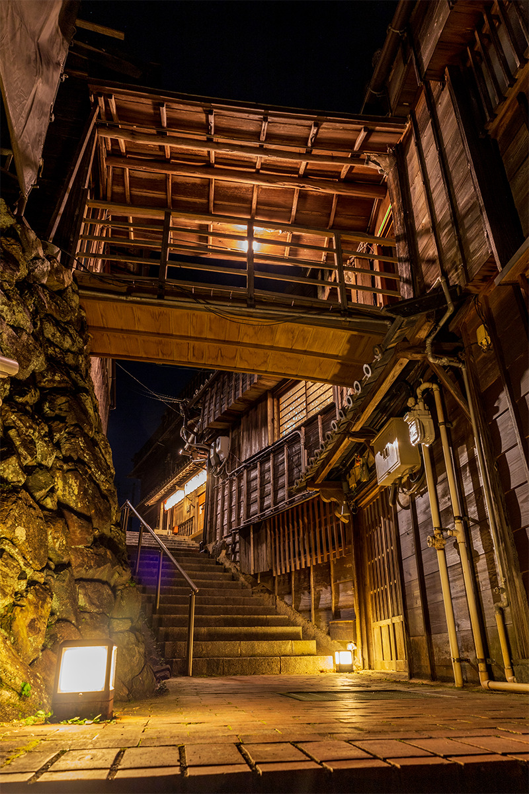
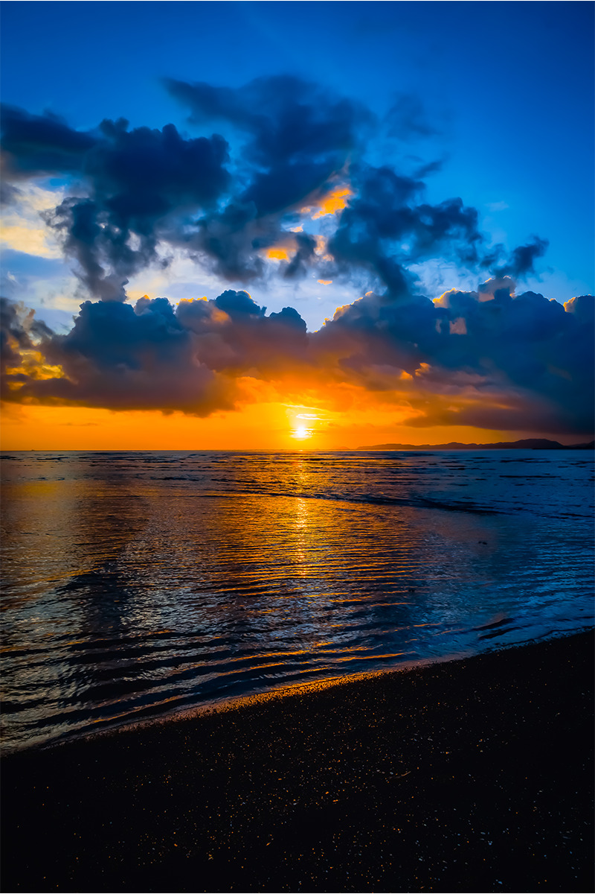
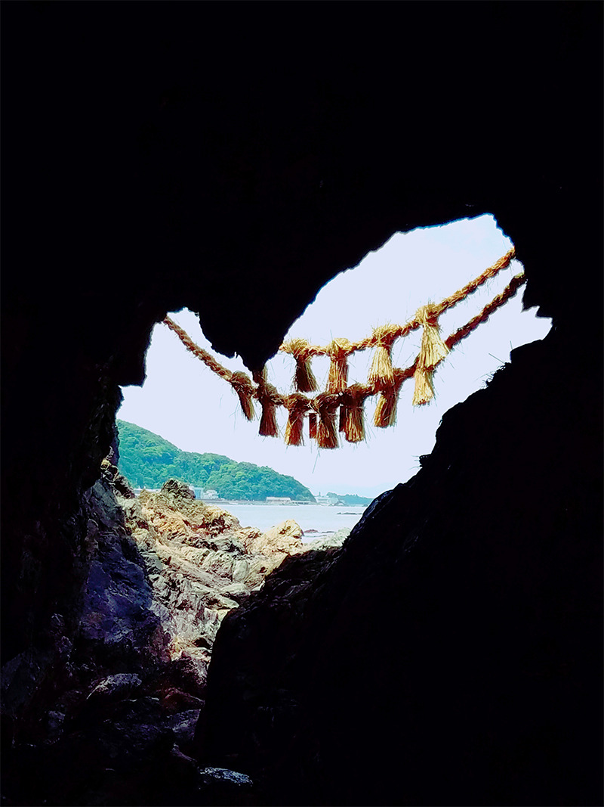
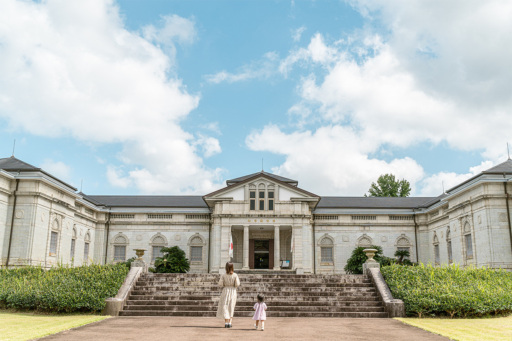
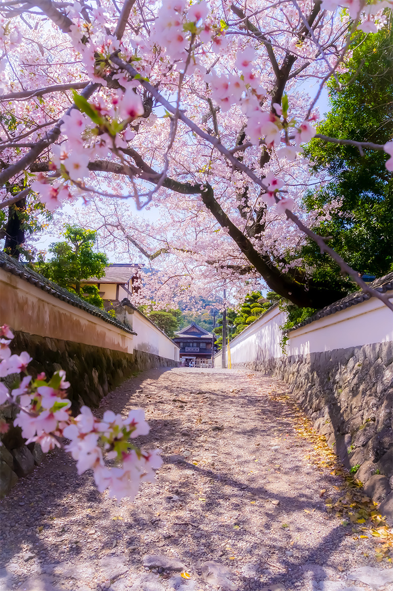

Префектура Миэ · Исэ и Тоба · виды
Виды Исэ и Тобы: горная дорога над заливом и места, которые нашли фотографы

Исэ знают по святилищу, куда японцы веками ходили паломниками. Но вокруг него хватает и других видов: горная дорога с панорамой островов, водопад в лесу, морские закаты и старые переулки, где цветёт сакура.
Дорога
Исэ-Сима Скайлайн: через гору Асама
Исэ-Сима Скайлайн соединяет город Исэ с портовым городом Тоба и переваливает через гору Асама. Это горная дорога длиной 16,3 км. Летом склоны покрыты густой зеленью, а внизу блестит на солнце залив Исэ.
Главная остановка находится на вершине: со смотровой площадки на горе Асама видна вся панорама островов Исэ-Симы. Ещё одна смотровая палуба устроена на середине склона, и вид оттуда тоже стоит того, чтобы притормозить. Лучшее время для поездки весна и осень, а подъём к видам здесь совсем несложный.
Поездку легко соединить с главными местами округи. До или после дороги рекомендуем зайти в святилище Исэ (Исэ-дзингу), которое японцы называют родиной своей души, а потом попробовать исэ-удон, толстую мягкую лапшу в тёмном соусе, на улице Окагэ-ёкотё. Рядом и аквариум Тобы. Проезд по дороге стоил 1270 иен в 2025 году.
Исэ-Сима Скайлайн
- Часы работы
- 7:00–19:00, в августе до 20:00 (во время мероприятий время может меняться)
- Выходные
- открыта круглый год
- Цены / Вход
- проезд 1270 иен
- Как добраться
- около 5 минут от развязки Исэ-Ниси на скоростной дороге Исэ
- Телефон
- +81 59-226-6752
Фотоконкурс
Исэ глазами фотографов
В 2022 году в Instagram прошёл фотоконкурс о малоизвестных видах Исэ, и жюри выбрало шесть лучших снимков. Ниже места, которые на них попали, и слова их авторов.
Водопад Ёмэй
Главный приз получил снимок водопада, к которому ведёт крутая горная тропа за святилищем Ёмэй. Это небольшой водопад, но вода в нём удивительно чистая.

«Это скрытый уголок Исэ. Глядя, как красиво и чисто течёт вода, забываешь о повседневной суете и о времени. Мне хотелось передать тишину, красоту и плавный ход времени, и этот кадр у меня один из любимых»
автор снимка
Рёкан «Асакити»
Рёкан «Асакити» принимает гостей больше 200 лет.

«В переулке кажется, будто перенёсся в эпоху Эдо. Так и слышишь шумные голоса путников, пришедших на поклонение в Исэ»
автор снимка
Пляж Оминато
Пляж Оминато лежит на берегу залива Исэ. Волны здесь спокойные, на песок выносит плавник, а морские черепахи откладывают на этом берегу яйца.

«В некоторые сезоны отсюда видна даже Фудзи. Когда бы ни пришёл, находишь свой собственный пейзаж»
автор снимка
Остров Кугури
Островок Кугури прячется за побережьем Кодзаки, и дойти до него можно только в сильный отлив, когда вода уходит дальше всего. Пройти сквозь скалу удаётся не каждый раз: нужно, чтобы совпали все условия.

«Я шёл по берегу, задыхаясь, и перебирался по камням. В тот день мне повезло: я оглянулся, а там такой милый вид»
автор снимка
Музей Дзингу Тёкокан
Дзингу Тёкокан основан в 1909 году как первый частный музей Японии. Это музей истории и культуры святилища Исэ.

«Великолепное здание в стиле Ренессанса выделяется среди всего вокруг. Чудесное место»
автор снимка
Переулки у Охараи-мати
От реки Исудзу к улице Охараи-мати, что ведёт к Внутреннему святилищу Найку, поднимаются узкие переулки, которые здесь называют «сэко». Весной над ними цветёт сакура.

«Я смотрел снизу от лестницы на сакуру в полном цвету. Она будто растворилась в пейзаже, полном истории, и кадр остался в памяти»
автор снимка